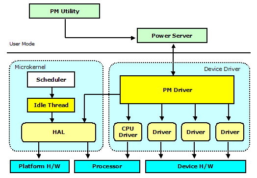
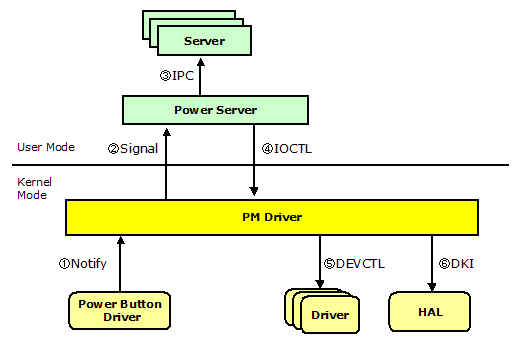
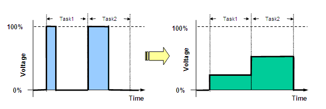

|
|
An Open Source, Royalty-free, Real-time Operating System |
Prex Home >
Document Index >
Prex Power Management
|
|||
Prex Home >
Document Index >
Prex Power Management
|
|||
Prex is designed to be used with battery-powered devices, such as mobile phones or consumer electronics devices. So, Prex provides an integrated and system-wide set of power management features. It helps to extend battery life, save energy and reduce heat and noise.
This document describes the design and implementation of the power management features of Prex.
The following components work together for power management in Prex.

Figure 1. Power Management Overview
Prex supports the following power states.
In the suspend state, the system powers down devices that are not needed in order to safe electricity, e.g. it may switch the monitor, sound card or modem off and turn them back on when the system returns from the suspend state.
Prex provides the power management timer which sets the system to the suspend state after a period of inactivity. If a device driver detects some user activities (e.g. keyboard input), the driver should notify it to the PM driver by using pm_notify() function to reload the PM timer.
LCD off timer is also provided by PM driver, and LCD driver can support automatic LCD off if it has the h/w capability.
The Power Server maintains a system-wide policy setting for its power operations. A user application can change the power policy appropriately for the user environment. Prex supports the following two power policies.
| PM Policy | Frequency/Voltage Control | Suspend Timer | LCD Off Timer | Device Performance |
|---|---|---|---|---|
| PM_POWERSAVE | Adaptive | Active | Active | Full |
| PM_PERFORMANCE | Max Level | Frozen | Frozen | Adaptive |
Power Server maintains the power policy that maps each power event to the power action.
The power server always monitors the power events sent from PM driver. The default power actions are listed in the following table.
| Power Event | Power Action |
|---|---|
| PME_PWRBTN_PRESS | PWR_OFF |
| PME_LOW_BATTERY | PWR_SUSPEND |
| PME_SLPBTN_PRESS | PWR_SUSPEND |
| PME_LCD_CLOSE | PWR_OFF |
IOCTL functions manipulate the power state and power policy used by the PM driver. It also handles the request for the suspend timer.
| Code | Parameter | Description |
|---|---|---|
| PMIOC_CONNECT | Task ID | Connection from power server |
| PMIOC_QUERY_EVENT | Event | Query power event |
| PMIOC_SET_POWER | Power state | Set system power state |
| PMIOC_SET_POLICY | Power policy | Set power policy |
| PMIOC_GET_POLICY | Power policy | Get power policy |
| PMIOC_SET_SUSTMR | Timeout time | Set suspend timer |
| PMIOC_GET_SUSTMR | Timeout time | Get suspend timer |
| PMIOC_SET_DIMTMR | Timeout time | Set dim timer |
| PMIOC_GET_DIMTMR | Timeout time | Get dim timer |
Each device driver can receive the power management event sent by the PM driver.
| Code | Parameter | Description |
|---|---|---|
| DEVCTL_PM_POWERDOWN | - | Set to low power mode |
| DEVCTL_PM_POWERUP | - | Set to normal power mode |
| DEVCTL_PM_CHGPOLICY | Power policy | Change power policy |
| DEVCTL_PM_LCDOFF | - | Power off LCD |
| DEVCTL_PM_LCDON | - | Power on LCD |
The device drivers should monitor PM events by using devctl() methods. And, when the driver receives DEVCTL_PM_POWERDOWN, it should program the device to different power mode to conserve total system power.
int
XXX_devctl(device_t dev, u_long cmd, void *arg)
{
switch (cmd) {
case DEVCTL_PM_POWERDOWN:
/* Program device to low power state. */
break;
case DEVCTL_PM_POWERUP:
/* Program device to normal power state. */
break;
}
return 0;
}
Each device driver can use the following PM services.
void pm_notify(int event); int pm_set_power(int); void pm_attach_lcd(device_t dev);
The idle thread works as a kernel thread, and it is assigned the lowest scheduling priority in the system. Thus, the idle thread runs when no other thread is active. It has the role of cutting down the power consumption of the system.
An idle thread is just a forever-loop to call the machine dependent routine to cut power. The following thread_idle() routine is called at the end of the kernel initialization.
void
thread_idle(void)
{
for (;;) {
machine_idle();
sched_yield();
}
}
The machine_idle() routine will program the platform H/W to the low power mode. This is typically invoking the power saving (halt) instruction supported by the processor. If any interrupts are occurred in this low power mode, it must be returned immediately from machine_idle(). Then, the idle thread will call sched_yield() to check the re-scheduling.
When the PM driver receives a reset request from users or drivers, it will call machine_reset() service in the microkernel. Or, the microkernel may reset the system by itself if it finds an unrecoverable error.
The following figure illustrates the control flow of shutdown by power button press.

Figure 2. Shutdown Flow
Dynamic voltage scaling (DVS) is widely used with mobile systems to save the processor power consumption, with minimum impact on performance. The basic idea is come from the fact the power consumption is proportional to V^2 x f, where V is voltage and f is frequency. Since processor does not always require the full performance, we can reduce power consumption by lowering voltage and frequency.
The following figure shows how the system executes tasks with lower power consumption.

Figure 3. DVS Control
We use the DVS algorithm known as Weiser Style [1]. If the utilization prediction x is high (over 70%), increase the speed by 20% of the maximum speed. If the utilization prediction is low (under 50%), decrease the speed by (60 - x)% of the maximum speed.
DVS Algorithm: Weiser Style
run_cycles += excess_cycles;
run_percent = (run_cycles * 100) / (idle_cycles + run_cycles);
next_excess = run_cycles - speed * (run_cycles + idle_cycles) / 100;
if (next_excess < 0)
next_excess = 0;
if (excess_cycles > idle_cycles)
newspeed = 100;
else if (run_percent > 70)
newspeed = speed + 20;
else if (run_percent < 50)
newspeed = speed - (60 - run_percent);
if (newspeed > max_speed)
newspeed = max_speed;
if (newspeed < min_speed)
newspeed = min_speed;
excess_cycles = next_excess;
excess_cycles is defined as the number of uncompleted run cycles from the last interval. For example, if we find 70% activity when running at full speed, and their processor speed was set to 50% during that interval, excess_cycles is set to 20%. This value (20%) is used to calculate the processor speed in the next interval.
The PM driver adjusts max CPU speed by using DVS algorithm called AVG<3> [2]. It computes an exponentially moving average of the previous intervals. "weight" is the relative weighting of past intervals relative to the current interval.
DVS Algorithm: AVG<3>predict = (weight x current + past) / (weight + 1)
IOCTL functions for CPU frequency control are as follows:
| Code | Parameter | Description |
|---|---|---|
| CFIOC_GET_INFO | struct cpufreqinfo | Get CPU frequency information |
CPU requency information structure:
struct cpufreqinfo {
int maxfreq; /* max speed in MHz */
int maxvolts; /* max power in mV */
int freq; /* current speed in MHz */
int volts; /* current power in mV */
};
If the target processor supports performance control, the CPU driver can export the following operations to utilize it.
struct cpufreq_ops {
int (*setperf)(int speed);
int (*getperf)(void);
void (*getinfo)(struct cpufreqinfo *info);
};
pmctrl is an utility to manage the various power management state in the system.
[prex:/boot]# pmctrl -? usage: pmctrl command commands: off -- Power off. reboot -- Reboot system. suspend -- Suspend system. info -- Disaplay power management information. policy -- Set power policy. sustime -- Set timeout for suspend timer. dimtime -- Set timeout for dim timer. battery -- Show current battery level. -? -- This help. [prex:/boot]#
pmctrl will translate the user request to the IPC message to the power server. pmctrl utility must have CAP_POWERMGMT capability in security setting.
The CPU monitor is a sample application to show the current processor power state - speed and its power.
CPU voltage monitor Speed: 600MHz 0|********------------|100 Power: 956mV 0|*************-------|100
The source code of this application can be found in the directory named "/usr/sample/cpumon".